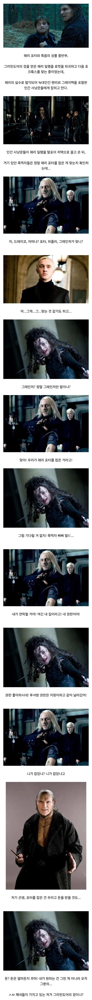
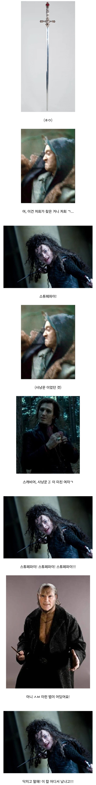
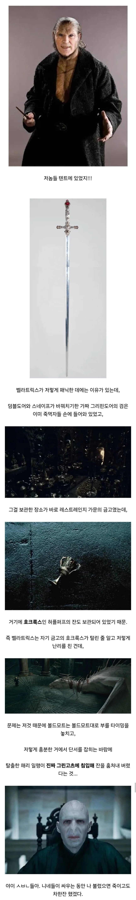

27 · 11 · 1 시간 전 · 원문



수집 당시 댓글 11개
사촌간불알빨기 · 3 시간 전
런던특별시 광진구 1통이 되어 마법사 세계 제패를 꿈꾸는 죽먹파 보스 볼드모트
↳ 답글 · 미츠루기 · 1 시간 전
설정대로 총맞고 뒤지는지 안뒤지는지 쏴봅시다!
고질라 · 2 시간 전
극성 학부모 모임이 다 그렇죠 뭐
닼린이 · 1 시간 전
허플퍼프 개열받네제대로된 발음은 후플푸프 란 말이다
↳ 답글 · 혼모노 · 1 시간 전
후뿌뿌뿌
↳ 답글 · M.D · 1 시간 전
후뿝뿌뿌
↳ 답글 · ladin · 1 시간 전
후쁘뿌쁘
↳ 답글 · 내일부터착한말만함 · 1 시간 전
허마이오니!!
↳ 답글 · 여름노을 · 1 시간 전
우후부우부
↳ 답글 · 하두구루부 · 1 시간 전
후뿌뿌뿌가 어딜
또내일 · 1 시간 전
돌고돌아 볼드모트 문제긴해 저새끼 별 거 아닌 일로 호출하면 죽이고 내기니 밥 주잖아 ㅋㅋ
런던특별시 광진구 1통이 되어 마법사 세계 제패를 꿈꾸는 죽먹파 보스 볼드모트